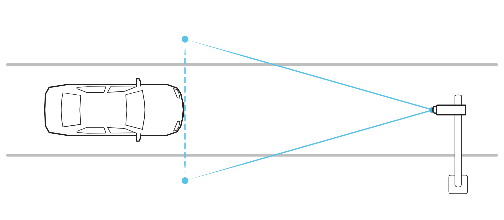
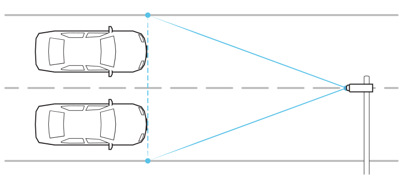
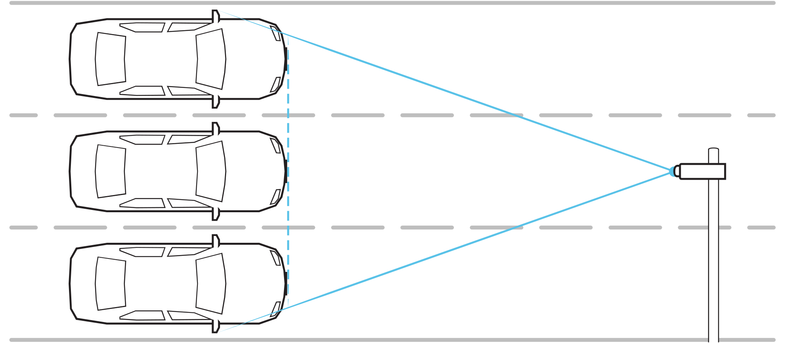

2. Lanes¶
Considering the number of lanes to be covered by vehicle detection, the position of the ANPR camera relative to the lane should be in accordance with the following recommendations.
2.1. 1 lane¶
An ANPR camera covering a single lane can be installed either within the lane or at its edge:

Make sure that the front of the vehicle is visible long enough in the field of view of the cameras - this means that the FoV should be mainly wider than the lane (about 2 times).
2.2. 2 lanes¶
To detect two lanes, the ANPR camera should be installed on the line separating the lanes:
Warning
It is not recommended to install the camera at the edge of the road due to the high probability of shadowing vehicles (no visibility of the license plate). If technically there is no other possibility, it is better to install the camera at the edge of the faster lane, where fewer trucks drive.
2.3. 3 lanes¶
For three lanes, the ANPR camera should be installed over the middle lane:
Warning
For three lanes, it is important to keep in mind the restrictions on the minimum height of license plate characters. In such a case, there is a risk that such a requirement will not be met, making the vehicle detection quality and the license plate recognition quality lower than expected.